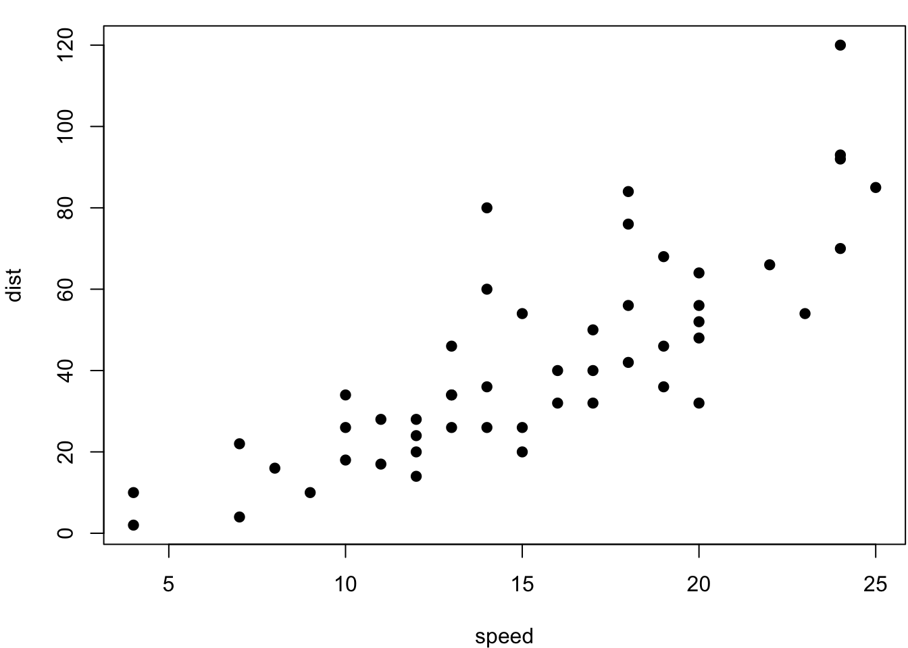

第 2 章 Basic Bioinformatics Concepts {#Basic Bioinformatics Concepts}
第dplyr章 现在我们可以试试 bookdown 的一些初级功能了，例如图表。图 2.1 是一幅无趣的散点图，表 2.1 是一份枯燥的数据。
math: \(\mu\) \[ \alpha\ +\ \beta\ \]
par(mar = c(4, 4, 1, .1))
plot(cars, pch = 19)

图 2.1: 雷猴啊，散点图！
knitr::kable(
iris[1:55,], caption = '雷猴啊，iris 数据！',
booktabs = TRUE,
longtabs = TRUE
)| Sepal.Length | Sepal.Width | Petal.Length | Petal.Width | Species |
|---|---|---|---|---|
| 5.1 | 3.5 | 1.4 | 0.2 | setosa |
| 4.9 | 3.0 | 1.4 | 0.2 | setosa |
| 4.7 | 3.2 | 1.3 | 0.2 | setosa |
| 4.6 | 3.1 | 1.5 | 0.2 | setosa |
| 5.0 | 3.6 | 1.4 | 0.2 | setosa |
| 5.4 | 3.9 | 1.7 | 0.4 | setosa |
| 4.6 | 3.4 | 1.4 | 0.3 | setosa |
| 5.0 | 3.4 | 1.5 | 0.2 | setosa |
| 4.4 | 2.9 | 1.4 | 0.2 | setosa |
| 4.9 | 3.1 | 1.5 | 0.1 | setosa |
| 5.4 | 3.7 | 1.5 | 0.2 | setosa |
| 4.8 | 3.4 | 1.6 | 0.2 | setosa |
| 4.8 | 3.0 | 1.4 | 0.1 | setosa |
| 4.3 | 3.0 | 1.1 | 0.1 | setosa |
| 5.8 | 4.0 | 1.2 | 0.2 | setosa |
| 5.7 | 4.4 | 1.5 | 0.4 | setosa |
| 5.4 | 3.9 | 1.3 | 0.4 | setosa |
| 5.1 | 3.5 | 1.4 | 0.3 | setosa |
| 5.7 | 3.8 | 1.7 | 0.3 | setosa |
| 5.1 | 3.8 | 1.5 | 0.3 | setosa |
| 5.4 | 3.4 | 1.7 | 0.2 | setosa |
| 5.1 | 3.7 | 1.5 | 0.4 | setosa |
| 4.6 | 3.6 | 1.0 | 0.2 | setosa |
| 5.1 | 3.3 | 1.7 | 0.5 | setosa |
| 4.8 | 3.4 | 1.9 | 0.2 | setosa |
| 5.0 | 3.0 | 1.6 | 0.2 | setosa |
| 5.0 | 3.4 | 1.6 | 0.4 | setosa |
| 5.2 | 3.5 | 1.5 | 0.2 | setosa |
| 5.2 | 3.4 | 1.4 | 0.2 | setosa |
| 4.7 | 3.2 | 1.6 | 0.2 | setosa |
| 4.8 | 3.1 | 1.6 | 0.2 | setosa |
| 5.4 | 3.4 | 1.5 | 0.4 | setosa |
| 5.2 | 4.1 | 1.5 | 0.1 | setosa |
| 5.5 | 4.2 | 1.4 | 0.2 | setosa |
| 4.9 | 3.1 | 1.5 | 0.2 | setosa |
| 5.0 | 3.2 | 1.2 | 0.2 | setosa |
| 5.5 | 3.5 | 1.3 | 0.2 | setosa |
| 4.9 | 3.6 | 1.4 | 0.1 | setosa |
| 4.4 | 3.0 | 1.3 | 0.2 | setosa |
| 5.1 | 3.4 | 1.5 | 0.2 | setosa |
| 5.0 | 3.5 | 1.3 | 0.3 | setosa |
| 4.5 | 2.3 | 1.3 | 0.3 | setosa |
| 4.4 | 3.2 | 1.3 | 0.2 | setosa |
| 5.0 | 3.5 | 1.6 | 0.6 | setosa |
| 5.1 | 3.8 | 1.9 | 0.4 | setosa |
| 4.8 | 3.0 | 1.4 | 0.3 | setosa |
| 5.1 | 3.8 | 1.6 | 0.2 | setosa |
| 4.6 | 3.2 | 1.4 | 0.2 | setosa |
| 5.3 | 3.7 | 1.5 | 0.2 | setosa |
| 5.0 | 3.3 | 1.4 | 0.2 | setosa |
| 7.0 | 3.2 | 4.7 | 1.4 | versicolor |
| 6.4 | 3.2 | 4.5 | 1.5 | versicolor |
| 6.9 | 3.1 | 4.9 | 1.5 | versicolor |
| 5.5 | 2.3 | 4.0 | 1.3 | versicolor |
| 6.5 | 2.8 | 4.6 | 1.5 | versicolor |
就这样，你可以一直编下去，直到编不下去。